Why Dialysis Adequacy Is a Life-or-Death Number Bakit ang Dialysis Adequacy ay isang Numero ng Buhay o Kamatayan Ngano ang Dialysis Adequacy usa ka Numero sa Kinabuhi o Kamatayon Bakit ing Dialysis Adequacy ya metung a Numero ning Biye o Kamatayan
Your kidneys — when healthy — filter your blood 24 hours a day, 7 days a week. Hemodialysis replaces that function for only 9–12 hours per week. Not all of that time is equally effective. Dialysis adequacy tells you and your doctor exactly how much of the toxin burden your sessions are clearing — and whether it is enough to keep you alive and well. A Kt/V below target is not just a number — it predicts higher rates of hospitalization, cardiovascular death, and shorter survival on dialysis. Ang inyong mga bato — kapag malusog — ay nagfi-filter ng inyong dugo ng 24 na oras sa isang araw, 7 araw sa isang linggo. Ang hemodialysis ay pumapalit lamang sa gawing iyon ng 9–12 na oras bawat linggo. Hindi lahat ng oras na iyon ay pantay na epektibo. Ang dialysis adequacy ay nagsasabi sa inyo at sa inyong doktor kung gaano karaming toxin ang naililinis ng inyong mga sesyon. Ang imong mga kidney — kung maayo — nagfilter sa imong dugo og 24 ka oras matag adlaw, 7 ka adlaw matag semana. Ang hemodialysis nagpuli lamang nianang gimbuhaton sa 9–12 ka oras matag semana. Dili tanan nianang oras pareho ka-epektibo. Ang dialysis adequacy nagsulti kanimo ug sa imong doktor kung pila sa toxin burden ang nalimpyohan sa imong mga sesyon. Ing inyu deng batu — nung malusog — ya nagfi-filter ning inyu daya ning 24 a oras king metung a aldo, 7 aldo king metung a lutu. Ing hemodialysis ya pumapalit lamang king gawing iyun ning 9–12 a oras bawat lutu. Ali amin ning oras a iyun ya pantay a epektibo. Ing dialysis adequacy ya nagsasabi king inyo at king inyu doktor nung gaano karaming toxin ing naililinis ning inyu deng sesyon.
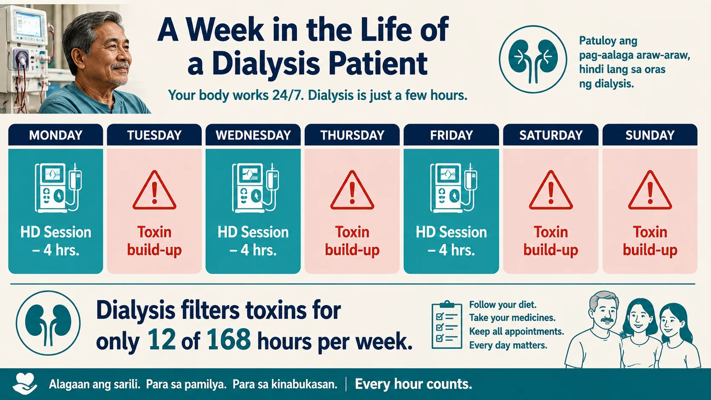
Every hour of effective clearance counts. Adequacy measurement ensures those 12 hours are doing the maximum possible work.Inadequate dialysis causes Ang hindi sapat na dialysis ay nagdudulot ng Ang dili igo nga dialysis nagpabuhat sa Ing ali sapat a dialysis ya nagdudulot ning
Uremic toxin accumulation, malnutrition, fluid overload, hypertension, cardiovascular disease, anemia worsening, cognitive impairment, bone disease, and significantly shorter survival. Akumulasyon ng uremic toxin, malnutrisyon, labis na likido, hypertension, cardiovascular disease, pagpalala ng anemia, pagbaba ng kakayahang cognitive, sakit sa buto, at mas maiikling buhay. Pag-ipon sa uremic toxin, malnutrisyon, labis nga likido, hypertension, cardiovascular disease, pagpalala sa anemia, kognitibong kapansanan, sakit sa bukog, ug mas mubo nga kinabuhi. Akumulasyon ning uremic toxin, malnutrisyon, labis a likido, hypertension, cardiovascular disease, pagpalala ning anemia, pagbaba ning kakayahang cognitive, sakit king buto, at mas maiikling biye.
What we measure Ano ang aming sinusukat Unsa ang among gisukat Ano ing aming sinusukat
We use urea as a surrogate marker for all uremic solutes. Pre- and post-dialysis BUN (blood urea nitrogen) blood draws, combined with session duration and fluid removal, calculate how efficiently each session cleared toxins. Ginagamit namin ang urea bilang surrogate marker para sa lahat ng uremic solute. Ang pre- at post-dialysis BUN blood draws, kasama ang tagal ng sesyon at pag-aalis ng likido, ay kinakalkula kung gaano kahusay ang bawat sesyon sa pag-aalis ng mga toxin. Gigamit namo ang urea isip surrogate marker alang sa tanan nga uremic solute. Ang pre- ug post-dialysis BUN blood draws, uban sa tagal sa sesyon ug pagtangtang sa likido, nagkalkula kung unsa ka-episyente ang matag sesyon sa pagtangtang sa mga toxin. Ginagamit namin ing urea bilang surrogate marker para king amin ning uremic solute. Ing pre- at post-dialysis BUN blood draws, kasama ing tagal ning sesyon at pag-aalis ning likido, ya kinakalkula nung gaano kahusay ing bawat sesyon king pag-aalis ning deng toxin.
How often it's checked Gaano kadalas ito sinusuri Kapila kini gisusi Gaano kadalas ini sinusuri
KDIGO 2024 recommends measuring dialysis adequacy (Kt/V) at least once per month. In the Philippines, most dialysis centers perform the paired BUN sampling monthly. Your result should be reported to you at every review. Inirerekomenda ng KDIGO 2024 ang pagsukat ng dialysis adequacy (Kt/V) nang hindi bababa sa isang beses bawat buwan. Sa Pilipinas, karamihang dialysis center ay nagsasagawa ng paired BUN sampling buwanang. Ang inyong resulta ay dapat iulat sa inyo sa bawat review. Girekomenda sa KDIGO 2024 ang pagsukat sa dialysis adequacy (Kt/V) bisan kausa matag buwan. Sa Pilipinas, kadaghanan sa mga dialysis center nagbuhat sa paired BUN sampling matag buwan. Ang imong resulta kinahanglan ipahibalo kanimo sa matag review. Inirerekomenda ning KDIGO 2024 ing pagsukat ning dialysis adequacy (Kt/V) nang ali bababa king metung a beses bawat bulan. King Pilipinas, karamihang dialysis center ya nagsasagawa ning paired BUN sampling buwanang. Ing inyu resulta ya dapat iulat king inyo king bawat review.
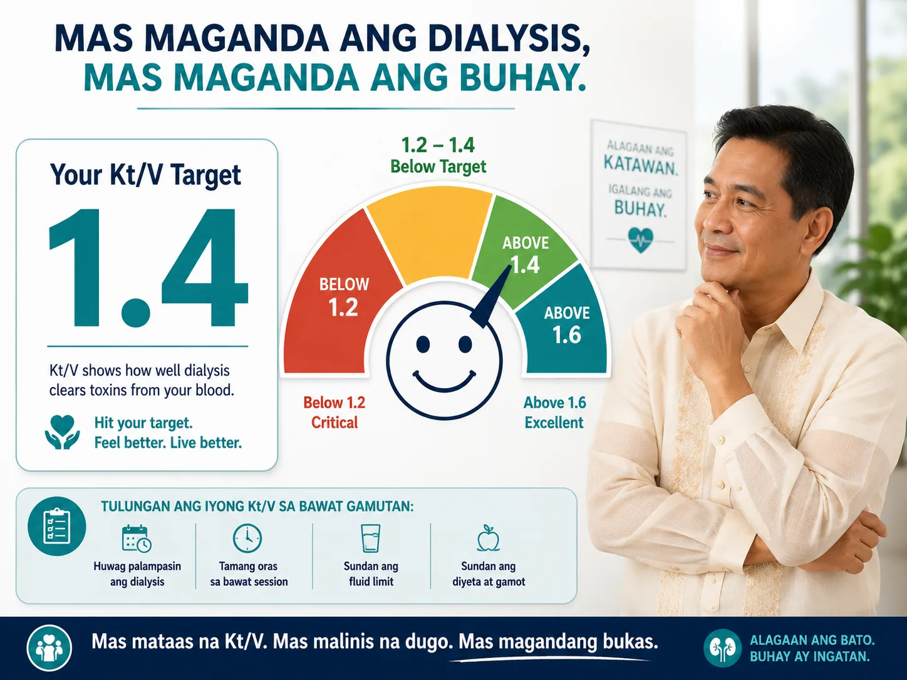
Kt/V is a score for your dialysis session. A result of 1.4 or above means enough toxins were cleared. Below 1.2 means your dialysis is critically insufficient.What is Kt/V — and What is URR? Ano ang Kt/V — at Ano ang URR? Unsa ang Kt/V — ug Unsa ang URR? Ano ing Kt/V — at Ano ing URR?
There are two main ways to measure dialysis adequacy. Both use your BUN (blood urea nitrogen) drawn before and immediately after a midweek dialysis session. Mayroong dalawang pangunahing paraan upang sukatin ang dialysis adequacy. Parehong gumagamit ng inyong BUN (blood urea nitrogen) na kinuha bago at kaagad pagkatapos ng midweek dialysis session. Adunay duha ka panguna nga paagi sa pagsukat sa dialysis adequacy. Pareho naggamit sa imong BUN (blood urea nitrogen) nga nakuha sa wala pa ug dayon human sa midweek dialysis session. Mayroong dalawang pangunahing paraan upang sukatin ing dialysis adequacy. Parehong gumagamit ning inyu BUN (blood urea nitrogen) a kinuha bago at kaagad kapabanuan ning midweek dialysis session.
Kt/V — The Gold StandardAng Gold StandardAng Gold Standard Ing Gold Standard
K = dialyzer clearance (mL/min) · t = treatment time (min) · V = urea distribution volume (body water, ~60% of body weight). Together, Kt/V expresses how many times your body's urea volume was "cleared" during the session. A Kt/V of 1.4 means urea was cleared 1.4 times over. Calculated using the Daugirdas second-generation formula — the international standard. K = dialyzer clearance (mL/min) · t = oras ng paggamot (min) · V = urea distribution volume (~60% ng timbang ng katawan). Magkasama, ang Kt/V ay nagpapahayag kung ilang beses ang volume ng urea ng inyong katawan ay "nalinis" sa panahon ng sesyon. Ang Kt/V na 1.4 ay nangangahulugang ang urea ay nalinis ng 1.4 beses. Kinakalkula gamit ang Daugirdas second-generation formula. K = dialyzer clearance (mL/min) · t = oras sa pagtambal (min) · V = urea distribution volume (~60% sa timbang sa lawas). Magkauban, ang Kt/V nagpahayag kung pila ka beses ang volume sa urea sa imong lawas "nalimpyohan" sa panahon sa sesyon. Ang Kt/V nga 1.4 nagpasabot nga ang urea nalimpyohan 1.4 beses. Gikalkula gamit ang Daugirdas second-generation formula. K = dialyzer clearance (mL/min) · t = oras ning paggamut (min) · V = urea distribution volume (~60% ning timbang ning bangkî). Magkasama, ing Kt/V ya nagpapahayag nung ilang beses ing volume ning urea ning inyu bangkî ya "nalinis" king panahon ning sesyon. Ing Kt/V a 1.4 ya nangangahulugang ing urea ya nalinis ning 1.4 beses. Kinakalkula gamit ing Daugirdas second-generation formula.
URR — The Simple RatioAng Simpleng RatioAng Simpleng Ratio Ing Simpleng Ratio
URR (Urea Reduction Ratio) = (Pre-BUN − Post-BUN) ÷ Pre-BUN × 100%. It expresses the percentage drop in BUN during the session. Simpler to calculate but less precise than Kt/V because it does not account for fluid removal, urea generation during treatment, or the time factor. Still used as a quick bedside check. Target: ≥65% per KDIGO 2024. URR = (Pre-BUN − Post-BUN) ÷ Pre-BUN × 100%. Nagpapahayag ng porsyento ng pagbaba ng BUN sa panahon ng sesyon. Mas simple na kalkulahin ngunit mas hindi tumpak kaysa sa Kt/V. Target: ≥65% ayon sa KDIGO 2024. URR = (Pre-BUN − Post-BUN) ÷ Pre-BUN × 100%. Nagpahayag sa porsyento nga pagpanaog sa BUN sa panahon sa sesyon. Mas simple pagkalkula apan dili kaayo tukma kaysa sa Kt/V. Target: ≥65% sumala sa KDIGO 2024. URR = (Pre-BUN − Post-BUN) ÷ Pre-BUN × 100%. Nagpapahayag ning porsyento ning pagbaba ning BUN king panahon ning sesyon. Mas simple a kalkulahin ngarud mas ali tumpak kaysa king Kt/V. Target: ≥65% ayon king KDIGO 2024.
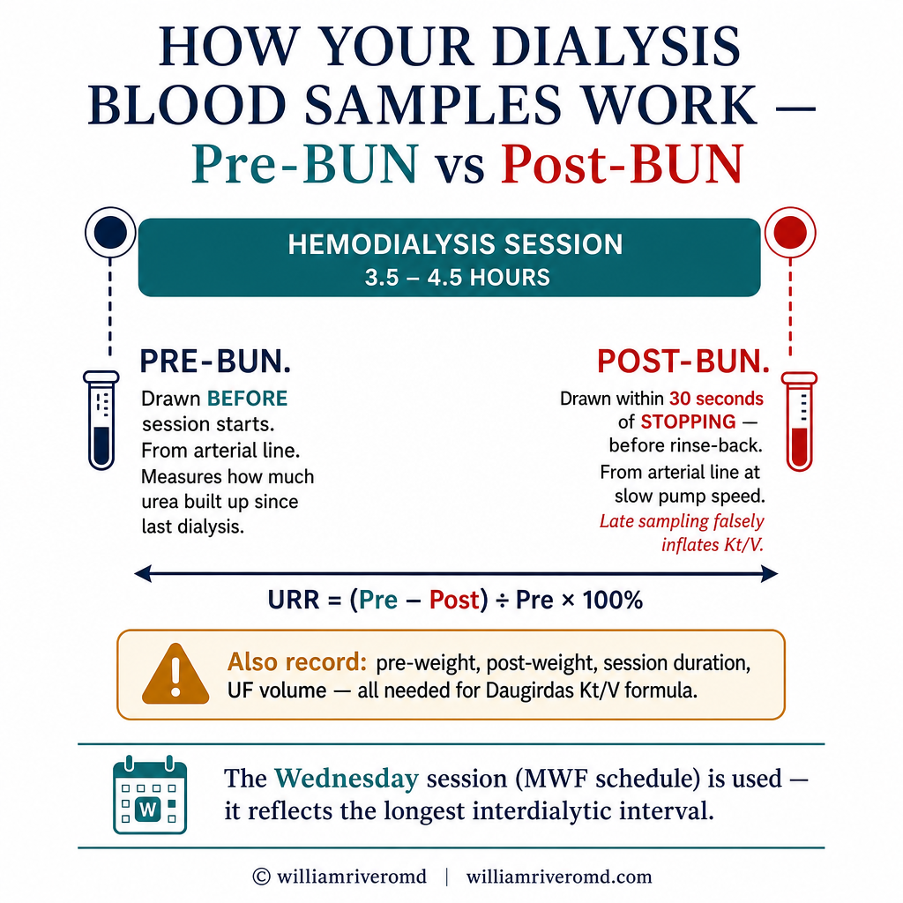
Why post-BUN timing is criticalBakit mahalaga ang oras ng post-BUNNgano kritikal ang oras sa post-BUN Bakit importante ing oras ning post-BUN
Post-BUN must be drawn from the arterial line within 30 seconds of stopping dialysis — before the pump slows down and before rinse-back (which dilutes the sample). Delayed sampling significantly underestimates post-BUN, falsely inflating Kt/V and making dialysis appear more effective than it was. If your team draws blood 5+ minutes after stopping, the Kt/V result is unreliable. Ang post-BUN ay dapat kunin mula sa arterial line sa loob ng 30 segundo pagkatapos ihinto ang dialysis — bago pabagalin ang pump at bago ang rinse-back. Ang naantalang sampling ay makabuluhang nagpapababa ng post-BUN, nagpapalaki ng Kt/V at nagpapakitang mas epektibo ang dialysis kaysa sa aktwal. Ang post-BUN kinahanglan makuha gikan sa arterial line sulod sa 30 segundo human mohunong ang dialysis — sa wala pa mohinay ang pump ug sa wala pa ang rinse-back. Ang napalangan nga sampling makikinabang nga nagpababa sa post-BUN, nagpataas ug buang sa Kt/V. Ing post-BUN ya dapat kunin mula king arterial line king loob ning 30 segundo kapabanuan ihinto ing dialysis — bago pabagalin ing pump at bago ing rinse-back. Ing naantalang sampling ya makabuluhang nagpapababa ning post-BUN, nagpapalaki ning Kt/V at nagpapakitang mas epektibo ing dialysis kaysa king aktwal.
Dialysis Adequacy Calculator — spKt/V & URR Dialysis Adequacy Calculator — spKt/V & URR Dialysis Adequacy Calculator — spKt/V & URR Dialysis Adequacy Calculator — spKt/V & URR
Enter your paired BUN values and session details to calculate your spKt/V (Daugirdas 2nd generation formula) and URR. Find these values on your monthly dialysis lab results or in your dialysis chart. Ilagay ang inyong paired BUN values at detalye ng sesyon upang kalkulahin ang inyong spKt/V (Daugirdas 2nd generation formula) at URR. Hanapin ang mga halagang ito sa inyong buwanang resulta ng laboratoryo ng dialysis o sa inyong dialysis chart. Isulod ang imong paired BUN values ug detalye sa sesyon aron makalkula ang imong spKt/V (Daugirdas 2nd generation formula) ug URR. Pangitaa kining mga kantidad sa imong monthly dialysis lab results o sa imong dialysis chart. Ilagay ing inyu paired BUN values at detalye ning sesyon upang kalkulahin ing inyu spKt/V (Daugirdas 2nd generation formula) at URR. Hanapin ing deng halagang ini king inyu buwanang resulta ning laboratoryo ning dialysis o king inyu dialysis chart.
⚕ Formula: spKt/V = −ln(R − 0.008×t) + (4 − 3.5×R) × UF/V, where R = Post-BUN/Pre-BUN, t = session time in hours. This is the Daugirdas second-generation equation — the KDIGO/KDOQI recommended standard. This calculator is for educational purposes and does not replace clinical assessment by your dialysis team. ⚕ Formula: spKt/V = −ln(R − 0.008×t) + (4 − 3.5×R) × UF/V, kung saan ang R = Post-BUN/Pre-BUN, t = oras ng sesyon sa oras. Ito ang Daugirdas second-generation equation. Ang calculator na ito ay para sa layuning pang-edukasyon at hindi pumapalit sa klinikal na pagsusuri ng inyong dialysis team. ⚕ Formula: spKt/V = −ln(R − 0.008×t) + (4 − 3.5×R) × UF/V, diin ang R = Post-BUN/Pre-BUN, t = oras sa sesyon sa oras. Kini ang Daugirdas second-generation equation. Kining calculator alang sa layunin sa edukasyon ug dili nagpuli sa klinikal nga pagsusuri sa imong dialysis team. ⚕ Formula: spKt/V = −ln(R − 0.008×t) + (4 − 3.5×R) × UF/V, nung saan ing R = Post-BUN/Pre-BUN, t = oras ning sesyon king oras. Ini ing Daugirdas second-generation equation. Ing calculator a ini ya para king layuning pang-edukasyon at ali pumapalit king klinikal a pagsusuri ning inyu dialysis team.
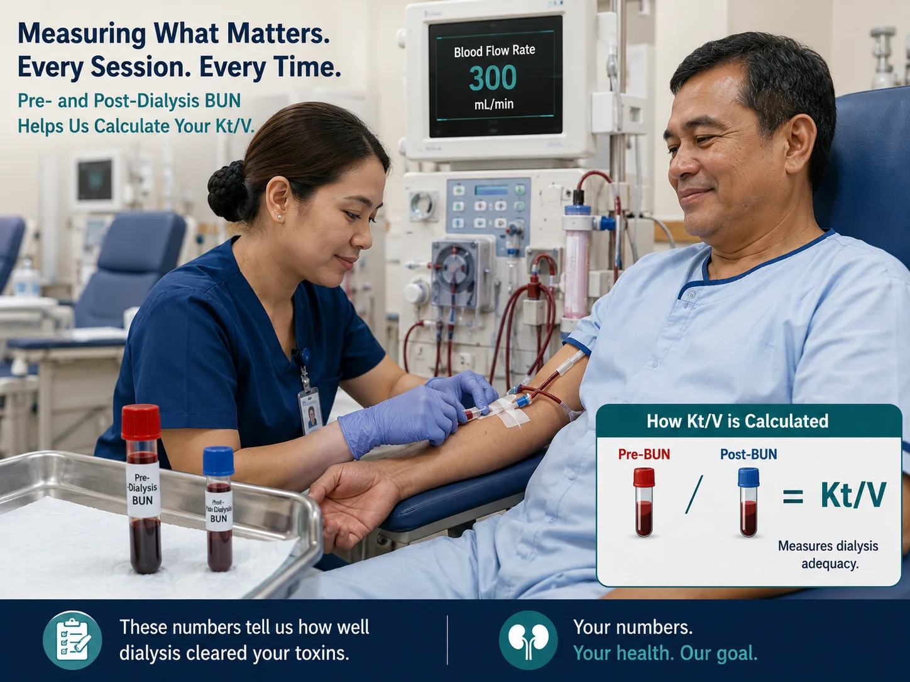
Accurate Kt/V depends on correct blood sampling: pre-dialysis blood before the session starts, post-dialysis using the slow-flow technique.What Your Numbers Should Be Ano Dapat ang Inyong Mga Numero Unsa Kinahanglan ang Imong mga Numero Ano Dapat ing Inyu Deng Numero
| MeasureSukatSukat Sukat | Minimum TargetMinimum na TargetMinimum nga Target Minimum a Target | OptimalOptimalOptimal Optimal | Clinical significanceKlinikal na kahalagahanKlinikal nga kahalagahan Klinikal a kahalagahan |
|---|---|---|---|
| spKt/V (per session) | ≥ 1.4 | 1.4 – 1.8 | Primary adequacy target. Each 0.1 increase above 1.4 associated with measurable survival benefit. Values <1.2 are critically inadequate.Pangunahing adequacy target. Bawat 0.1 na pagtaas sa itaas ng 1.4 ay nauugnay sa nasusukat na benepisyo sa kaligtasan.Panguna nga adequacy target. Matag 0.1 nga pagtaas sa ibabaw sa 1.4 nalangkit sa nasukat nga benepisyo sa pagkabuhi. Pangunahing adequacy target. Bawat 0.1 a pagtaas king itaas ning 1.4 ya nauugnay king nasusukat a benepisyo king kaligtasan. |
| URR | ≥ 65% | 65 – 75% | Secondary check. If URR ≥65% but Kt/V <1.4, trust the Kt/V — URR is less precise. URR <60% always indicates problem.Pangalawang pagsusuri. Kung URR ≥65% ngunit Kt/V <1.4, pagkatiwalaan ang Kt/V — ang URR ay hindi gaanong tumpak.Ikaduha nga pagsusi. Kung URR ≥65% apan Kt/V <1.4, saligang ang Kt/V — ang URR dili kaayo tukma. Pangalawang pagsusuri. Nung URR ≥65% ngarud Kt/V <1.4, pagkatiwalaan ing Kt/V — ing URR ya ali gaanong tumpak. |
| Ultrafiltration rate (UFR) | < 13 mL/h/kg | < 10 mL/h/kg | High UFR independently increases cardiovascular mortality. Each session's fluid removal should be <13 mL/h/kg body weight. Exceeding this requires longer sessions or better interdialytic fluid control.Ang mataas na UFR ay nagtataas ng cardiovascular mortality. Ang bawat sesyon na pag-aalis ng likido ay dapat na <13 mL/h/kg ng timbang ng katawan.Ang taas nga UFR independenteng nagpataas sa cardiovascular mortality. Ang matag sesyon nga pagtangtang sa likido kinahanglan <13 mL/h/kg sa timbang sa lawas. Ing matas a UFR ya nagtataas ning cardiovascular mortality. Ing bawat sesyon a pag-aalis ning likido ya dapat a <13 mL/h/kg ning timbang ning bangkî. |
| Session frequency | 3× / week | 3–4× / week | The minimum is thrice weekly. Studies consistently show mortality benefit with more frequent dialysis (5–6×/week). Even one missed session per month significantly increases 30-day hospitalization risk.Ang minimum ay tatlong beses bawat linggo. Ang mga pag-aaral ay patuloy na nagpapakita ng benepisyo sa pagkakaroon ng mas madalas na dialysis.Ang minimum makatulo matag semana. Ang mga pagtuon nagpakita ug benepisyo sa mas padalas nga dialysis. Ing minimum ya tatlong beses bawat lutu. Ing deng pag-aaral ya patuloy a nagpapakita ning benepisyo king pagkakaroon ning mas madalas a dialysis. |
| Session duration | ≥ 3.5 hrs | 4 hrs | Duration directly determines Kt/V. Cutting sessions short to meet a schedule is a common cause of inadequate dialysis. Each 30-minute reduction in session time reduces Kt/V by approximately 0.15–0.2.Ang tagal ay direktang nagtatakda ng Kt/V. Ang pagbawas ng sesyon ay isang karaniwang sanhi ng hindi sapat na dialysis.Ang tagal direktang nagtakda sa Kt/V. Ang pagputol sa mga sesyon usa ka komon nga hinungdan sa dili igo nga dialysis. Ing tagal ya direktang nagtatakda ning Kt/V. Ing pagbawas ning sesyon ya metung a karaniwang sanhi ning ali sapat a dialysis. |
Kt/V < 1.2 is a critical threshold — act immediatelyAng Kt/V < 1.2 ay isang kritikal na threshold — kumilos kaagadAng Kt/V < 1.2 usa ka kritikal nga threshold — molihok dayon Ing Kt/V < 1.2 ya metung a kritikal a threshold — kumilos kaagad
A Kt/V below 1.2 is not a borderline result — it signals that a dangerous amount of uremic toxin is being retained. Studies show that patients with persistent Kt/V <1.2 have 50–80% higher all-cause mortality compared to those meeting the ≥1.4 target. If your monthly Kt/V is below 1.2, request an urgent review of your dialysis prescription with your nephrologist. Do not wait for the next scheduled appointment. Ang Kt/V na mas mababa sa 1.2 ay nagpapahiwatig na isang mapanganib na dami ng uremic toxin ang nanatiling nakapananatili. Ang mga pag-aaral ay nagpapakita na ang mga pasyenteng may patuloy na Kt/V <1.2 ay may 50–80% na mas mataas na all-cause mortality. Kung ang inyong buwanang Kt/V ay mas mababa sa 1.2, humiling ng agarang pagsusuri ng inyong dialysis prescription. Ang Kt/V ubos sa 1.2 nagpahinumdom nga usa ka delikadong kantidad sa uremic toxin ang nagpabilin. Ang mga pagtuon nagpakita nga ang mga pasyente nga adunay persistent nga Kt/V <1.2 adunay 50–80% nga mas taas nga all-cause mortality. Kung ang imong monthly Kt/V ubos sa 1.2, mangayo ug urgent review sa imong dialysis prescription. Ing Kt/V a mas mababa king 1.2 ya nagpapahiwatig a metung a mapanganib a dami ning uremic toxin ing nanatiling nakapananatili. Ing deng pag-aaral ya nagpapakita a ing deng pasyenteng atin patuloy a Kt/V <1.2 ya atin 50–80% a mas matas a all-cause mortality. Nung ing inyu buwanang Kt/V ya mas mababa king 1.2, humiling ning agarang pagsusuri ning inyu dialysis prescription.
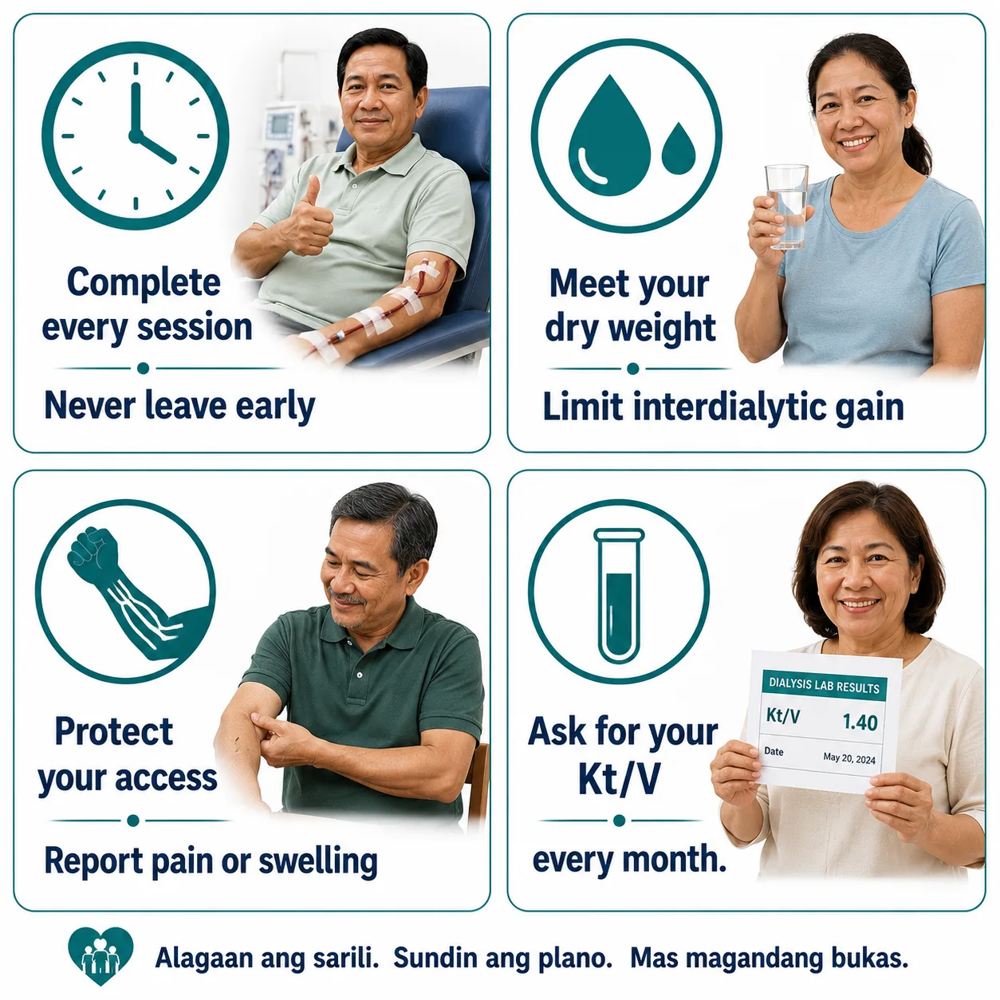
Four habits that directly protect your Kt/V — all within your control.Why Is My Kt/V Low — and How Is It Fixed? Bakit Mababa ang Aking Kt/V — at Paano Ito Aayusin? Ngano Ubos ang Akong Kt/V — ug Unsaon Kini Pag-ayos? Bakit Mababa ing Aking Kt/V — at Paano Ini Aayusin?
| Cause of low Kt/VSanhi ng mababang Kt/VHinungdan sa ubos nga Kt/V Sanhi ning mababang Kt/V | How to identifyPaano matukoyUnsaon pag-ila Paano matukoy | FixSolusyonSolusyon Solusyon |
|---|---|---|
| Session cut shortPinaikli ang sesyonGiputol ang sesyon Pinaikli ing sesyon | Actual run time <3.5 hrs in chartAktwal na oras <3.5 oras sa chartAktwal nga oras <3.5 oras sa chart Aktwal a oras <3.5 oras king chart | Do not leave early. Schedule must protect full session time. Discuss with team if sessions are routinely shortened.Huwag umalis nang maaga. Talakayin sa team kung ang mga sesyon ay regular na pinaikli.Ayaw moinit og aga. Hisguti sa team kung ang mga sesyon kasagarang giputol. Eka umalis nang maaga. Talakayin king team nung ing deng sesyon ya regular a pinaikli. |
| Access recirculation (AVF/AVG)Access recirculationAccess recirculation Access recirculation | Low Kt/V despite adequate time; doppler or recirculation test positiveMababang Kt/V sa kabila ng sapat na oras; positibo ang recirculation testUbos nga Kt/V bisan igo ang oras; positibo ang recirculation test Mababang Kt/V king kabila ning sapat a oras; positibo ing recirculation test | Fistulogram + angioplasty or surgical revision of stenotic access. Needle placement review.Fistulogram + angioplasty o surgical revision ng stenotic access.Fistulogram + angioplasty o surgical revision sa stenotic access. Fistulogram + angioplasty o surgical revision ning stenotic access. |
| Low blood flow rate (Qb)Mababang blood flow rateUbos nga blood flow rate Mababang blood flow rate | Qb <250 mL/min in chart logs; access dysfunctionQb <250 mL/min sa mga log ng chartQb <250 mL/min sa mga log sa chart Qb <250 mL/min king deng log ning chart | Target Qb 300–400 mL/min. Evaluate access for stenosis. Increase Qb incrementally if tolerated.Target Qb 300–400 mL/min. Suriin ang access para sa stenosis.Target Qb 300–400 mL/min. I-evaluate ang access alang sa stenosis. Target Qb 300–400 mL/min. Suriin ing access para king stenosis. |
| Dialyzer under-performanceUnder-performance ng dialyzerUnder-performance sa dialyzer Under-performance ning dialyzer | Reused dialyzer with >10–12 reuses; clotted fibers on inspectionNa-reuse na dialyzer na may >10–12 gamit; may namuong fibersNa-reused nga dialyzer nga adunay >10–12 paggamit; adunay namuong fibers A-reuse a dialyzer a atin >10–12 gamit; atin namuong fibers | Replace dialyzer. Use high-flux membrane. Limit reuse to center protocol. Discuss upgrading dialyzer surface area (KoA).Palitan ang dialyzer. Gumamit ng high-flux membrane. Limitahan ang reuse.Pulihan ang dialyzer. Gamiton ang high-flux membrane. Limitahan ang reuse. Palitan ing dialyzer. Gumamit ning high-flux membrane. Limitahan ing reuse. |
| Missed sessionsNapalaktaw na mga sesyonNalaktaw nga mga sesyon Napalaktaw a deng sesyon | Attendance record shows absences; pre-BUN elevated week after missed sessionRekord ng presensya ay nagpapakita ng mga paglibanRekord sa presensya nagpakita sa mga paglangan Rekord ning presensya ya nagpapakita ning deng pagliban | Every missed session is a life-threatening decision. Discuss barriers with social worker and team. Explore scheduling alternatives.Bawat napalaktaw na sesyon ay isang mapanganib na desisyon. Talakayin ang mga hadlang sa social worker.Matag nalaktaw nga sesyon usa ka makapanganib nga desisyon. Hisguti ang mga babag sa social worker. Bawat napalaktaw a sesyon ya metung a mapanganib a desisyon. Talakayin ing deng hadlang king social worker. |
| Incorrect blood samplingMaling pagkuha ng dugoSayop nga pagkuha sa dugo Maling pagkuha ning daya | Post-BUN drawn >30 sec after stopping; saline dilution in samplePost-BUN na kinuha >30 sec pagkatapos ihinto; dilution ng saline sa samplePost-BUN nakuha >30 sec human mohunong; dilution sa saline sa sample Post-BUN a kinuha >30 sec kapabanuan ihinto; dilution ning saline king sample | Strict slow-flow sampling protocol: slow Qb to 50 mL/min for 15 sec, then draw from arterial port immediately. Staff training required.Strict slow-flow sampling protocol. Kinakailangan ang pagsasanay ng staff.Strict slow-flow sampling protocol. Kinahanglan ang pagsanay sa staff. Strict slow-flow sampling protocol. Kinakailangan ing pagsasanay ning staff. |
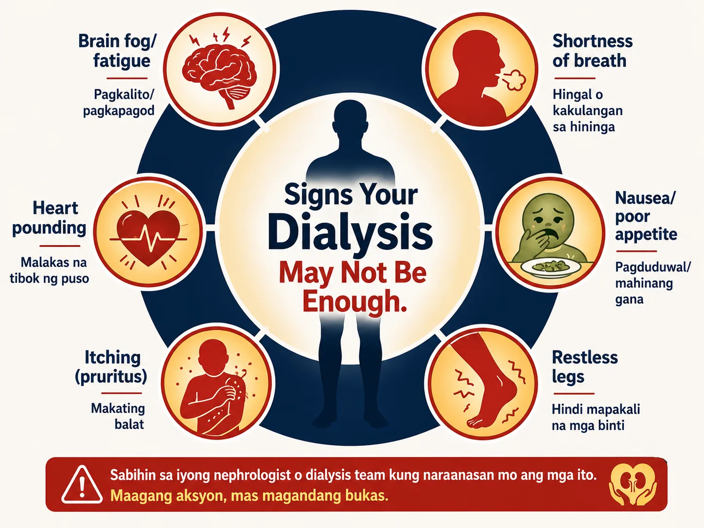
These symptoms may signal your dialysis is not clearing enough toxins — report them to your nephrologist.Symptoms That Suggest Your Dialysis May Not Be Adequate Mga Sintomas na Nagmumungkahi na Hindi Sapat ang Inyong Dialysis Mga Sintomas nga Nagsugyot nga Dili Igo ang Imong Dialysis Deng Sintomas a Nagmumungkahi a Ali Sapat ing Inyu Dialysis
These symptoms should prompt an urgent check of your Kt/V and a review of your dialysis prescription — even if your last measurement was within range. Ang mga sintomas na ito ay dapat mag-udyok ng agarang pagsusuri ng inyong Kt/V at pagrepaso ng inyong dialysis prescription. Kining mga sintomas kinahanglan mag-prompt ug urgent nga pagsusi sa imong Kt/V ug review sa imong dialysis prescription. Ing deng sintomas a ini ya dapat mag-udyok ning agarang pagsusuri ning inyu Kt/V at pagrepaso ning inyu dialysis prescription.
Persistent symptoms between sessions Mga sintomas sa pagitan ng mga sesyon Persistent nga mga sintomas tali sa mga sesyon Deng sintomas king pagitan ning deng sesyon
Worsening fatigue, nausea or vomiting between sessions, metallic taste, loss of appetite, persistent itching (pruritus), inability to concentrate, headaches — especially in the 24–48 hours before your next session. Pagpalala ng pagod, pagduduwal o pagsusuka sa pagitan ng mga sesyon, metallic taste, kawalan ng gana sa pagkain, paulit-ulit na pangangati, kawalan ng kakayahang mag-concentrate, sakit ng ulo. Pagpalala sa pagkapuyo, pagdulaw o pagsuka tali sa mga sesyon, metallic taste, kawad-on sa gana sa pagkaon, persistent nga pangangati, dili makaconcentrate, sakit sa ulo. Pagpalala ning pagod, pagduduwal o pagsusuka king pagitan ning deng sesyon, metallic taste, kawalan ning gana king pamangan, paulit-ulit a pangangati, kawalan ning kakayahang mag-concentrate, sakit ning ulo.
Signs of fluid overload Mga palatandaan ng labis na likido Mga timailhan sa labis nga likido Deng palatandaan ning labis a likido
Persistent leg swelling that does not fully resolve by session end, shortness of breath on mild exertion or lying flat, uncontrolled blood pressure despite medications, rapid weight gain between sessions exceeding 3–4% of dry weight. Patuloy na pamamaga ng binti na hindi ganap na natatapos sa pagtatapos ng sesyon, hirap sa paghinga sa banayad na pagsisikap, hindi nakokontrol na presyon ng dugo, mabilis na pagtaas ng timbang sa pagitan ng mga sesyon. Persistent nga pamamaga sa tiil nga dili hingpit mawala sa pagtapos sa sesyon, kaghingal sa banay nga paningkamot, dili kontroladong presyon sa dugo, paspas nga pagtaas sa timbang tali sa mga sesyon. Patuloy a pamamaga ning binti a ali ganap a natatapos king pagtatapos ning sesyon, hirap king paghinga king banayad a pagsisikap, ali nakokontrol a presyon ning daya, mabilis a pagtaas ning timbang king pagitan ning deng sesyon.
Lab red flags Mga lab red flag Mga lab red flag Deng lab red flag
Pre-dialysis BUN consistently >90 mg/dL, rising pre-dialysis potassium despite dietary compliance, worsening metabolic acidosis (low bicarbonate <18), falling albumin, or rising phosphorus despite binder use — all suggest inadequate clearance. Pre-dialysis BUN na patuloy na >90 mg/dL, tumataas na pre-dialysis potassium, lumalala na metabolic acidosis, bumababang albumin, o tumataas na phosphorus sa kabila ng paggamit ng binder. Pre-dialysis BUN consistently >90 mg/dL, nagkataas nga pre-dialysis potassium, nagpalala nga metabolic acidosis, nagpababa nga albumin, o nagkataas nga phosphorus bisan ang paggamit sa binder. Pre-dialysis BUN a patuloy a >90 mg/dL, tumataas a pre-dialysis potassium, lumalala a metabolic acidosis, bumababang albumin, o tumataas a phosphorus king kabila ning paggamit ning binder.
Adequacy in Peritoneal Dialysis — The Kt/Vurea Weekly Target Adequacy sa Peritoneal Dialysis — Ang Weekly Kt/Vurea Target Adequacy sa Peritoneal Dialysis — Ang Weekly Kt/Vurea Target Adequacy king Peritoneal Dialysis — Ing Weekly Kt/Vurea Target
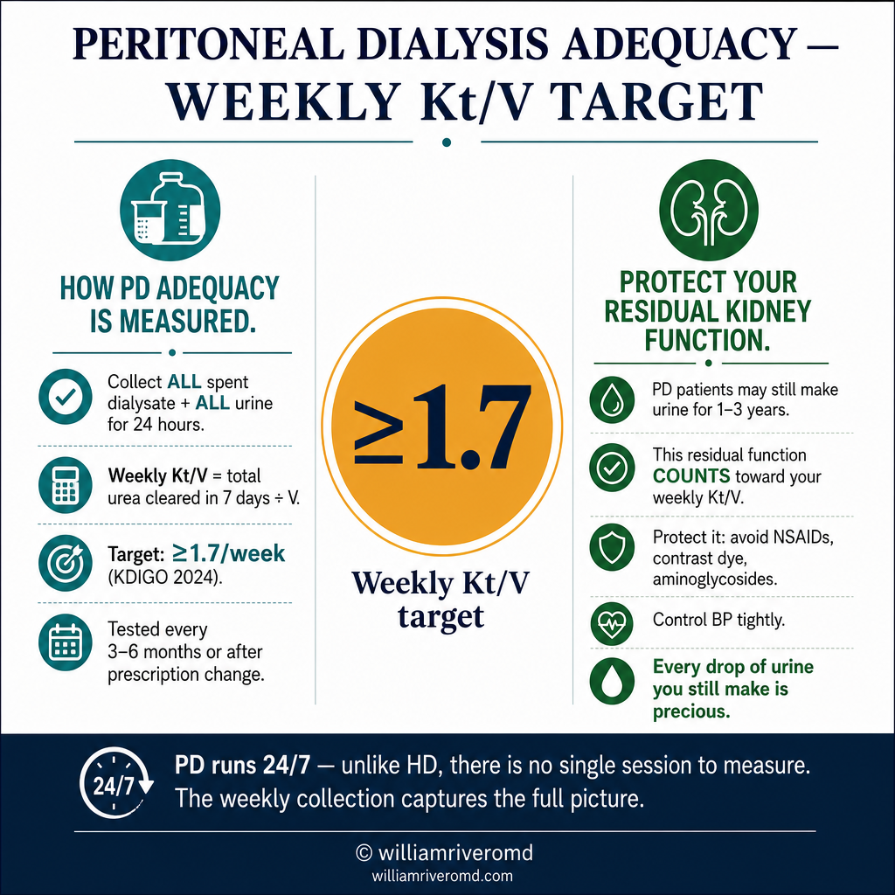
PD adequacy is measured differently from HD — because PD runs continuously, not in discrete sessions. The target is a weekly total Kt/V ≥ 1.7 (KDIGO 2024), which combines both dialysis-delivered clearance and any residual kidney function the patient still has. Ang PD adequacy ay sinusukat nang iba mula sa HD — dahil ang PD ay tumatakbo nang tuloy-tuloy. Ang target ay isang weekly total Kt/V ≥ 1.7 (KDIGO 2024), na pinagsama ang parehong dialysis-delivered clearance at anumang natitirang pag-andar ng bato na mayroon pa rin ang pasyente. Ang PD adequacy gisukatan lahi gikan sa HD — tungod kay ang PD nagdagan nga padayon. Ang target mao ang weekly total Kt/V ≥ 1.7 (KDIGO 2024), nga gitipon ang dialysis-delivered clearance ug ang bisan unsang nabilin nga renal function. Ing PD adequacy ya sinusukat nang iba mula king HD — dahil ing PD ya tumatakbo nang tuloy-tuloy. Ing target ya metung a weekly total Kt/V ≥ 1.7 (KDIGO 2024), a pinagsama ing parehong dialysis-delivered clearance at anumang natitirang pag-andar ning batu a mayroon pa rin ing pasyente.
How PD adequacy is measured Paano sinusukat ang PD adequacy Unsaon pagsukat sa PD adequacy Paano sinusukat ing PD adequacy
A 24-hour collection of all spent dialysate AND all urine (if any residual urine output remains) is analyzed. Weekly Kt/V = total urea cleared in 7 days ÷ volume of distribution. Measured every 3–6 months or after prescription changes. Isang 24-oras na koleksyon ng lahat ng spent dialysate AT lahat ng ihi ang sinusuri. Weekly Kt/V = kabuuang urea na nalinis sa 7 araw ÷ volume of distribution. Sinusukat bawat 3–6 buwan. Usa ka 24-oras nga koleksyon sa tanan nga spent dialysate UG tanan nga ihi ang gisusi. Weekly Kt/V = kinatibuk-ang urea nga nalimpyohan sa 7 ka adlaw ÷ volume of distribution. Gisukatan matag 3–6 buwan. Metung a 24-oras a koleksyon ning amin ning spent dialysate AT amin ning ihi ing sinusuri. Weekly Kt/V = kabuuang urea a nalinis king 7 aldo ÷ volume of distribution. Sinusukat bawat 3–6 bulan.
Residual renal function — protect it Residual na pag-andar ng bato — protektahan ito Residual nga renal function — protektahan kini Residual a pag-andar ning batu — protektahan ini
PD patients often retain some urine output for 1–3 years after starting. This residual renal function (RRF) contributes meaningfully to weekly Kt/V and is associated with better survival and quality of life. Protect RRF by avoiding nephrotoxins (NSAIDs, contrast dye, aminoglycosides), maintaining hydration, and controlling blood pressure tightly. Ang mga pasyenteng PD ay madalas na napanatili ang ilang output ng ihi sa loob ng 1–3 taon pagkatapos magsimula. Ang residual renal function (RRF) na ito ay makabuluhang nag-aambag sa weekly Kt/V. Protektahan ang RRF sa pamamagitan ng pag-iwas sa mga nephrotoxin. Ang mga pasyente nga PD kasagaran nagpabilin ug pipila ka output sa ihi sulod sa 1–3 ka tuig human magsugod. Kining residual renal function (RRF) makikinabang nga nag-amot sa weekly Kt/V. Protektahan ang RRF pinaagi sa paglikay sa mga nephrotoxin. Ing deng pasyenteng PD ya madalas a napanatili ing ilang output ning ihi king loob ning 1–3 banua kapabanuan magsimula. Ing residual renal function (RRF) a ini ya makabuluhang nag-aambag king weekly Kt/V. Protektahan ing RRF king pamamagitan ning pag-iwas king deng nephrotoxin.
Common Questions Mga Karaniwang Tanong Komon nga mga Pangutana Deng Karaniwang Tanong
My Kt/V is 1.4 — can I shorten my sessions?Ang aking Kt/V ay 1.4 — maaari ko bang paikliin ang aking mga sesyon?Ang akong Kt/V 1.4 — mahimo ba nako paiklion ang akong mga sesyon? Ing aking Kt/V ya 1.4 — maaari ko bang paikliin ing aking deng sesyon?
No. 1.4 is the minimum, not the ideal. Shortening sessions to barely meet target is dangerous — one bad week, one access problem, or one calculation error and you fall below the critical threshold. Think of 1.4 as the floor, not the goal.Hindi. Ang 1.4 ay ang minimum, hindi ang ideal. Ang pagpaikli ng mga sesyon upang halos matugunan ang target ay mapanganib. Isipin ang 1.4 bilang sahig, hindi bilang layunin.Dili. Ang 1.4 mao ang minimum, dili ang ideal. Ang pagputol sa mga sesyon aron halos matugonan ang target delikado. Hunahunaa ang 1.4 isip salog, dili isip tumong. Ali. Ing 1.4 ya ing minimum, ali ing ideal. Ing pagpaikli ning deng sesyon upang halos matugunan ing target ya mapanganib. Isipin ing 1.4 bilang sahig, ali bilang layunin.
My dialysis center doesn't give me my Kt/V result. What should I do?Hindi ibinibigay sa akin ng aking dialysis center ang aking resulta ng Kt/V. Ano ang gagawin ko?Ang akong dialysis center wala naghatag sa akong resulta sa Kt/V. Unsa ang akong buhaton? Ali ibinibigay king akin ning aking dialysis center ing aking resulta ning Kt/V. Ano ing gagawin ko?
You have the right to know your adequacy result every month. Ask directly: "What was my Kt/V this month?" Write it down. Track it over time. If the center does not measure Kt/V monthly, discuss with your nephrologist — this is a KDIGO standard of care.May karapatan kayo na malaman ang inyong adequacy result bawat buwan. Magtanong nang direkta: "Ano ang aking Kt/V ngayong buwan?" Isulat ito. Subaybayan sa paglipas ng panahon.Adunay katungod ka sa pag-alam sa imong adequacy result matag buwan. Pangutana direkta: "Unsa ang akong Kt/V karon nga buwan?" Isulat kini. I-track kini sa paglabay sa panahon. Atin karapatan kayu a malaman ing inyu adequacy result bawat bulan. Magtanong nang direkta: "Ano ing aking Kt/V ngayong bulan?" Isulat ini. Subaybayan king paglipas ning panahon.
Can diet affect Kt/V?Maaari bang makaapekto ang diyeta sa Kt/V?Makaapekto ba ang diyeta sa Kt/V? Maaari bang makaapekto ing diyeta king Kt/V?
Diet affects the pre-dialysis BUN (the numerator of URR) but not the actual dialysis efficiency. High protein intake raises pre-BUN, which can make URR look worse even if Kt/V is unchanged. The Daugirdas Kt/V formula partially corrects for this. However, poor diet worsens the uremic burden that dialysis must clear.Nakakaapekto ang diyeta sa pre-dialysis BUN ngunit hindi sa aktwal na kahusayan ng dialysis. Ang mataas na intake ng protina ay nagpapataas ng pre-BUN, na maaaring magpasamâ ng URR kahit na hindi nagbabago ang Kt/V.Ang diyeta nakaapekto sa pre-dialysis BUN apan dili sa aktwal nga kahusayan sa dialysis. Ang taas nga protein intake nagpataas sa pre-BUN, nga mahimong makapahimong dili maayo ang URR bisan wala mabag-o ang Kt/V. Nakakaapekto ing diyeta king pre-dialysis BUN ngarud ali king aktwal a kahusayan ning dialysis. Ing matas a intake ning protina ya nagpapataas ning pre-BUN, a maaaring magpasamâ ning URR kahit a ali nagbabago ing Kt/V.
I feel fine — does my Kt/V still matter?Okay naman ako — mahalaga pa rin ba ang Kt/V ko?Okay ra ako — importante pa ba ang akong Kt/V? Okay naman ako — importante pa rin ba ing Kt/V ko?
Uremic toxin accumulation is largely asymptomatic until it reaches dangerous levels. Feeling well does not mean dialysis is adequate — it means your body is still compensating. By the time symptoms appear, you may already have months of inadequate clearance behind you. The number must be checked regardless of symptoms.Ang akumulasyon ng uremic toxin ay halos walang sintomas hanggang maabot nito ang mapanganib na antas. Ang pakiramdam na maayos ay hindi nangangahulugang sapat ang dialysis. Dapat suriin ang numero anuman ang mga sintomas.Ang pag-ipon sa uremic toxin halos walay sintomas hangtud makaabut kini sa delikadong antas. Ang pagbati ug maayo dili nagpasabot nga igo ang dialysis. Ang numero kinahanglan susiihon bisan unsang sintomas. Ing akumulasyon ning uremic toxin ya halos alang sintomas anggang maabot nini ing mapanganib a antas. Ing pakiramdam a maayos ya ali nangangahulugang sapat ing dialysis. Dapat suriin ing numero anuman ing deng sintomas.
Track Your Wellbeing — Validated Patient-Reported Outcome MeasuresSubaybayan ang Iyong Kalusugan — Mga Napatunayan na Pansukat ng Kalidad ng BuhayI-monitor ang Imong Kaayohan — Mga Napatunayan nga Sukod sa Kalidad sa KinabuhiSubaybayan ing Kalusugan Mo — Deng Napatunayan a Sukat ning Kalidad ning Buhay
Dialysis adequacy is not only measured by Kt/V. Symptom burden is a direct indicator of whether your dialysis is clearing enough uremic toxins. These three tools capture how your body is responding to your current dialysis prescription — and provide structured data to bring to your next adequacy review.Ang kasapatan ng dialysis ay hindi lamang sinusukat ng Kt/V. Ang pasanin ng sintomas ay isang direktang tagapagpahiwatig kung gaano kalinisan ng iyong dialysis ang mga uremic toxin. Ang tatlong kasangkapang ito ay kumukuha kung paano tumutugon ang iyong katawan sa iyong kasalukuyang reseta ng dialysis.Ang kasapatan sa dialysis dili lamang gisukod sa Kt/V. Ang burden sa sintomas usa ka direkta nga timailhan kung unsa kadaghan ang gipanghinlo sa dialysis nga mga uremic toxin. Kini nga tulo ka mga himan nagkuha kung giunsa motubag ang imong lawas sa imong kasamtangang reseta sa dialysis.Ing kasapatan ning dialysis ay hindi lamang sinusukat ning Kt/V. Ing pasanin ning sintomas ay isang direktang tagapagpahiwatig kung kapilan kalinisan ning dialysis mo deng uremic toxin. Deng tatlong kasangkapang iti ay kumukuha kung paanu tumutugon ing katawan mo king kasalukuyang reseta ning dialysis mo.
In the past 4 weeks, how bothered were you by each of the following? Rate each: 0 = Not at all bothered → 4 = Extremely bothered. Score 0–100 (higher = fewer symptoms = better).Sa nakaraang 4 na linggo, gaano kayo nagabala ang bawat sumusunod? I-rate ang bawat isa: 0 = Hindi talaga nagabala → 4 = Lubhang nagabala.Sa miaging 4 ka semana, unsa ka disturbo ang matag mosunod? I-rate ang matag usa: 0 = Wala gyud disturbo → 4 = Grabe kaayo nga disturbo.King nakaraang 4 a linggo, kapilan kayo nagabala ing bawat sumusunod? I-rate ang bawat metung: 0 = Hindi talaga nagabala → 4 = Lubhang nagabala.
—
—
KDQOL-36 Symptom/Problem subscale. Hays RD et al. Kidney Int 1994;46(3):860–866. Adapted for patient self-monitoring; not a clinical diagnostic tool.
In the past week, how bothersome was each symptom? Rate each: 0 = Not present, 1 = Barely bothersome, 2 = Somewhat, 3 = Quite a bit, 4 = Very much. Score 0–120 (lower = better).Sa nakaraang linggo, gaano kagambala ang bawat sintomas? I-rate: 0 = Wala, 1 = Bahagya, 2 = Medyo, 3 = Medyo marami, 4 = Napakarami.Sa miaging semana, unsa ka makabalda ang matag sintomas? I-rate: 0 = Wala, 1 = Gamay ra, 2 = Medyo, 3 = Daghan, 4 = Grabeng daghan.King nakaraang linggo, kapilan kagambala ing bawat sintomas? I-rate: 0 = Wala, 1 = Konti, 2 = Medyo, 3 = Medyo marami, 4 = Napakarami.
—
—
Dialysis Symptom Index. Weisbord SD et al. J Palliat Med. 2004;7(1):23–32. Adapted for patient self-monitoring; not a clinical diagnostic tool.
Over the past week, how much have the following affected you? Rate each: 0 = Not at all, 1 = Slightly, 2 = Moderately, 3 = Severely, 4 = Overwhelmingly. Score 0–48 (lower = better).Sa nakaraang linggo, gaano kalaki ang naapektuhan ka ng bawat sumusunod? I-rate: 0 = Hindi, 1 = Kaunti, 2 = Katamtaman, 3 = Malubha, 4 = Napakalubha.Sa miaging semana, unsa ka daghan ang naapekto ka sa matag mosunod? I-rate: 0 = Wala, 1 = Gamay, 2 = Katamtaman, 3 = Grabe, 4 = Grabeng-grabe.King nakaraang linggo, kapilan kalaki ing naapektuhan ka ning bawat sumusunod? I-rate: 0 = Hindi, 1 = Konti, 2 = Katamtaman, 3 = Malubha, 4 = Napakalubha.
—
—
IPOS-Renal. Murtagh FE et al. Palliative Medicine 2019;33(1):20–29. Adapted for patient self-monitoring; not a clinical diagnostic tool.
Dialysis Adequacy: Clinical Overview
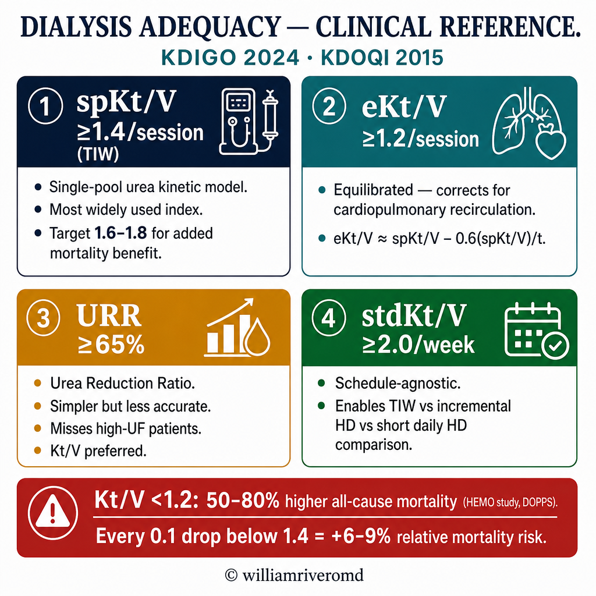
Core principle: Kt/V is a dimensionless index representing the fractional urea clearance per session. The single-pool Kt/V (spKt/V) of ≥1.4 per session (TIW) is the KDIGO 2024 minimum; an equilibrated Kt/V (eKt/V) ≥1.2 is its physiological equivalent. Standardized Kt/V (stdKt/V) ≥2.0/week is required when comparing across different dialysis schedules.
Key Adequacy Indices
spKt/V — single-pool, urea kinetic model; most commonly used. Target ≥1.4/session (TIW).
eKt/V — equilibrated; accounts for cardiopulmonary recirculation. eKt/V ≈ spKt/V − 0.6(spKt/V)/t (Daugirdas correction). Target ≥1.2.
URR — urea reduction ratio; simpler but less accurate. Target ≥65%. Does not account for UF-driven convective clearance or urea generation.
stdKt/V — normalizes for any schedule; enables comparison of TIW vs incremental HD vs SDHD. Target ≥2.0/week.
Clinical Implications of Sub-target Kt/V
Kt/V <1.2 per session → ~50–80% higher all-cause mortality (HEMO study, DOPPS).
Persistent sub-target Kt/V → uremic toxin accumulation, accelerated cardiovascular disease, EPO hypo-responsiveness, malnutrition, and cognitive decline.
Every 0.1 reduction in Kt/V below 1.4 is associated with a 6–9% increase in relative mortality risk (meta-analysis, Jadoul et al.).
URR alone misses patients with high ultrafiltration volumes (overestimates true clearance) or low urea generation rates.
| Parameter | KDIGO 2024 Target | KDOQI 2015 | Comment |
|---|---|---|---|
| spKt/V (HD, TIW) | ≥1.4/session | ≥1.4/session | Minimum; target 1.6–1.8 for added benefit |
| eKt/V (HD, TIW) | ≥1.2/session | ≥1.2/session | Use when comparing with PD or SDHD |
| URR (HD, TIW) | ≥65% | ≥65% | Surrogate only; Kt/V preferred |
| stdKt/V (any schedule) | ≥2.0/week | — | Enables schedule-agnostic comparison |
| Weekly Kt/V (PD) | ≥1.7/week | ≥1.7/week | Residual renal Kt/V may count |
| CCr weekly (PD, CAPD) | ≥50 L/1.73 m² | ≥50 L/1.73 m² | For high/average transporters |
| Monitoring frequency | Monthly | Monthly | After prescription change: recheck in 4–6 wk |
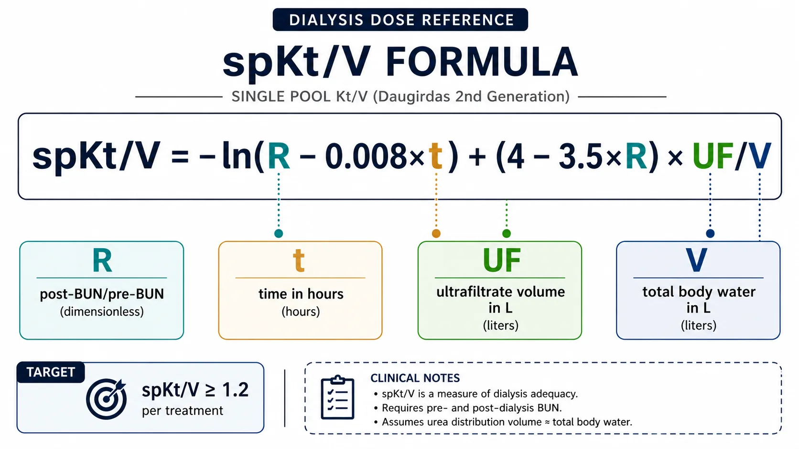
Daugirdas 2nd-generation formula — the standard for spKt/V calculation in clinical practice.Kt/V Calculation Methods
Daugirdas 2nd-Generation spKt/V
spKt/V = −ln(R − 0.008 × t) + (4 − 3.5 × R) × UF/V
Where: R = post-BUN / pre-BUN · t = session time in hours · UF = ultrafiltrate volume (L) · V = estimated urea distribution volume (L)
V estimation: Watson formula (preferred) or simplified: V ≈ 0.60 × post-HD weight (males), 0.55 × post-HD weight (females). Use actual DEXA or bioimpedance if available.
Equilibrated eKt/V (Daugirdas–Schneditz)
eKt/V ≈ spKt/V − 0.6(spKt/V)/t + 0.03
Where t = session time in hours. The post-dialysis rebound (cardiopulmonary + regional) averages 12–15 min; eKt/V corrects for this without requiring a delayed post-BUN sample.
Alternative: draw true eKt/V blood 30–60 min post-session if access allows.
URR
URR (%) = [(pre-BUN − post-BUN) / pre-BUN] × 100
Simple, widely available, but does not account for convective urea removal (UF effect) or urea generation during dialysis. URR ≥65% ≈ spKt/V ≥1.2 in most patients, not ≥1.4. Always compute Kt/V in addition to URR.
Standardized Kt/V
stdKt/V = (N × Kt/V) / [1 + (t_off/t_on) × (1 − e^(−Kt/V))]
Where N = number of sessions per week, t_off = interdialytic interval, t_on = session duration. Most nephrologists use published nomograms or software (e.g., NxStage, Fresenius) for this calculation.
| Lab Sampling Requirement | Specification |
|---|---|
| Pre-dialysis BUN | Drawn immediately before session (within 5 min); slow pump start method (<100 mL/min × 15 sec, then arterial draw) to avoid UF dilution |
| Post-dialysis BUN | Slow-flow method: reduce Qb to 50–100 mL/min × 15–20 sec, then draw from arterial line. Do NOT stop UF during post-draw; stop dialysate flow only. |
| Session time (t) | Actual on-dialysis time (clock start to clock stop); exclude setup/teardown. Missed minutes must be documented. |
| Ultrafiltration volume | Total UF volume recorded by machine (L). Include any saline given for hypotension. |
| Post-dialysis weight | Dry weight assessment required monthly; use for V estimation. |
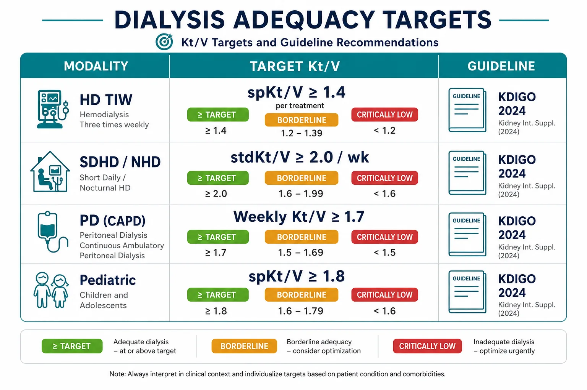
KDIGO 2024 adequacy targets at a glance — HD, incremental, SDHD, and PD.Adequacy Targets by Guideline & Population
| Population | Modality | Target Kt/V | Evidence / Notes |
|---|---|---|---|
| Standard HD (TIW) | IHD | spKt/V ≥1.4; eKt/V ≥1.2 | KDIGO 2024; no mortality benefit shown above 1.7 in HEMO trial |
| High-flux HD | HF-HD | spKt/V ≥1.4 + β2M clearance | MPO study: β2M reduction ≥75% target for middle-molecule clearance |
| Incremental HD (1–2×/wk) | Incremental | stdKt/V ≥2.0/wk | Residual kidney function (RKF) can be counted; document with 24-h urine |
| Short daily HD (6×/wk) | SDHD | stdKt/V ≥2.0/wk | FHN trial: SDHD improved LVH, BP, phosphate control |
| Nocturnal HD (3–6×/wk) | NHD | stdKt/V ≥2.0/wk | Superior middle-molecule clearance; Kt/V ≤1.2/session due to long slow sessions |
| CAPD | PD | Weekly Kt/V ≥1.7 | KDIGO 2022; residual GFR counted (measure 24-h urine Kt/V every 2 months) |
| APD (cycler) | PD | Weekly Kt/V ≥1.7 | Measure both daytime dwell and nocturnal drain; total 24-h collection |
| Pediatric HD | IHD | spKt/V ≥1.8 | Higher target due to higher metabolic rate; KDIGO 2019 pediatric guidelines |
| Large-volume patients (V >50 L) | IHD | spKt/V ≥1.4 but may need extended sessions | V underestimated in obesity; consider bioimpedance |
Limitations of Kt/V as Adequacy Marker
- Urea is a small molecule surrogate — middle molecules (β2M, indoxyl sulfate) and protein-bound toxins are not captured
- Kt/V does not account for residual kidney function without urine collection
- Single-pool model overestimates true clearance (corrected by eKt/V)
- Gender and body composition affect V — Watson formula may underestimate V in obese patients
- Adequate Kt/V does not ensure adequate fluid, electrolyte, or nutritional management
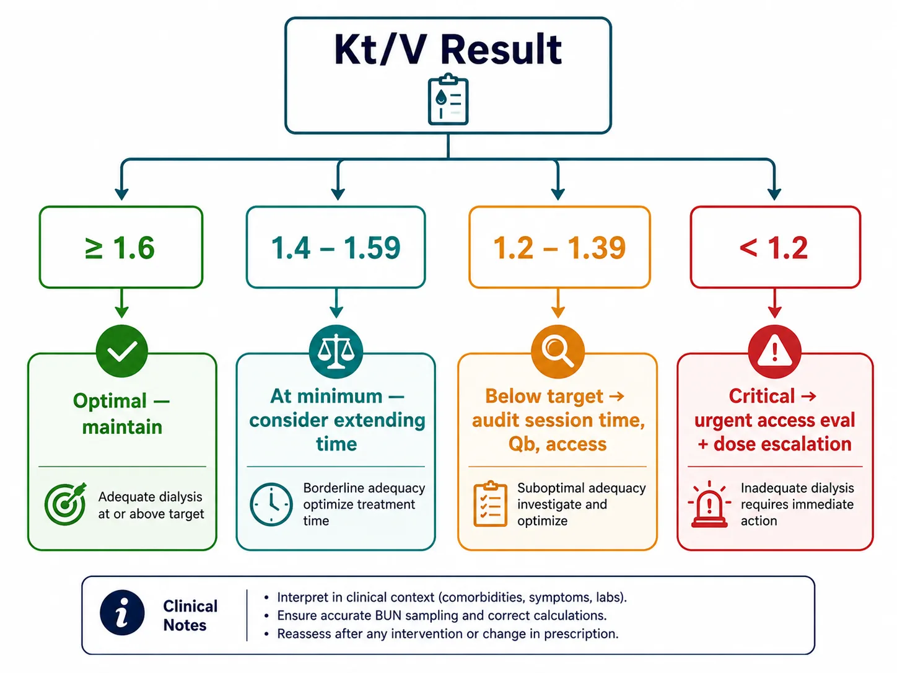
Decision pathway from Kt/V result to prescription action — based on KDIGO 2024 thresholds.Prescription Adjustment Based on Kt/V
Kt/V is determined by four modifiable variables: session time (t), blood flow rate (Qb), dialyzer clearance (K), and urea distribution volume (V). V is fixed by patient size; optimize the other three to increase Kt/V.
| Variable | Typical Range | Effect on Kt/V | Optimization Strategy |
|---|---|---|---|
| Session time (t) | 180–270 min | +10–15% per 30 min added | First-line: extend session time before increasing Qb. Target ≥240 min for high-V patients. |
| Blood flow (Qb) | 250–400 mL/min | +5–10% per 50 mL/min increase | Limited by access; recirculation increases at higher Qb with AV grafts/fistulaes. Check access function first. |
| Dialysate flow (Qd) | 500–800 mL/min | Minimal above 500 for low-flux HD; relevant for HHD | Increase to 600–800 mL/min if Qb >300 mL/min to maintain Qd:Qb ratio ≥1.5 |
| Dialyzer (KoA) | KoA 600–1400 mL/min | High-flux dialyzer adds 5–10% | Upsize dialyzer membrane area if all other variables optimized. Consider HDF for middle-molecule benefit. |
| Access recirculation | Target <10% | Reduces effective Qb | Measure via thermodilution or ultrasound dilution. >15% → access evaluation required. |
Prescription Response Algorithm
| Kt/V Result | Interpretation | Immediate Action |
|---|---|---|
| ≥1.6 | Optimal | Maintain prescription. Confirm at next monthly check. |
| 1.4–1.59 | At target minimum | Maintain. Consider extending session time to target ≥1.6. Monitor UFR — if >13 mL/h/kg, address fluid management. |
| 1.2–1.39 | Below target | Audit session time and Qb. Rule out access recirculation. Increase session time by 30 min as first step. Recheck Kt/V in 4–6 weeks. |
| <1.2 | Critically inadequate | Urgent review. Investigate access function, session adherence, sampling error, and machine performance. Escalate frequency or duration. Admit if symptomatic. |
Common Causes of Spuriously High Kt/V
- Pre-BUN drawn with blood pump off or after heparin flush (dilutional error)
- Post-BUN drawn without slow-flow technique (post-rebound underestimate)
- Session time recorded as scheduled, not actual (especially with early terminations)
- V underestimated in malnourished/amputee patients (overestimates Kt/V)
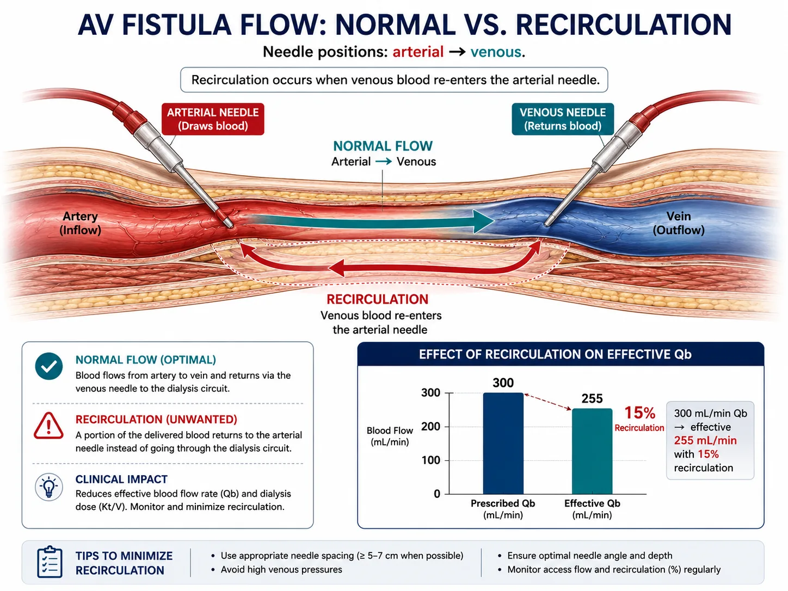
AV access recirculation — the most common correctable cause of unexplained low Kt/V.Troubleshooting Low Kt/V
| Root Cause | Clue | Corrective Action |
|---|---|---|
| Access recirculation | High Qb but low Kt/V; access thrill/bruit change | Thermodilution or HD01/Transonic access flow measurement; fistulogram if flow <600 mL/min |
| Shortened sessions | Audit log shows early terminations (cramps, hypotension, patient request) | Address intradialytic hypotension (IDH): adjust dry weight, UF rate, sodium profiling, cooled dialysate |
| Low blood flow rate | Qb consistently <250 mL/min | Access stenosis evaluation; needle positioning change; upsize needle gauge (15→14G AVF) |
| Dialyzer clotting | High transmembrane pressure (TMP), visible clotting on inspection | Optimize anticoagulation (UFH bolus/infusion adjustment); consider citrate regional anticoagulation |
| Missed sessions | Attendance log <3×/week | Social work referral; transportation assistance; consider home dialysis transition |
| Large V (obesity) | BMI >35; V calculated as >50 L | Consider extended session time; SDHD or NHD referral; bioimpedance for true V |
| Sampling error | Unexplained improvement without prescription change | Re-educate nursing staff on slow-flow post-BUN technique; audit pre-BUN collection protocol |
| Machine malfunction | Conductivity alarms, UF calibration errors | Biomedical engineering inspection; calibrate UF accuracy (±3% per AAMI standard) |
Intradialytic Hypotension (IDH) — Most Common Cause of Session Shortening
IDH (>20 mmHg SBP drop or SBP <90 mmHg) affects 20–30% of HD sessions in the Philippines. Management: target UFR <10 mL/h/kg (KDIGO), reassess dry weight monthly, use 35–36°C dialysate, sodium profiling, midodrine 10 mg pre-HD for refractory cases. Avoid excessive food intake pre-session.
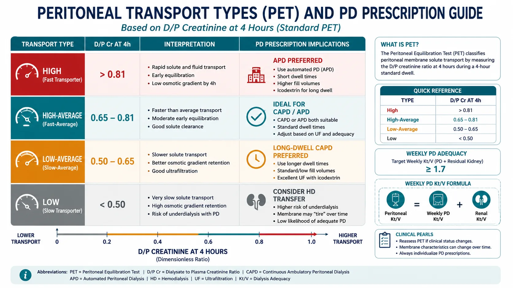
Peritoneal equilibration test (PET) — transport classification and PD prescription implications.PD Adequacy Assessment
PD adequacy is expressed as total weekly Kt/V ≥1.7 (peritoneal + residual renal). Unlike HD, both components must be measured together every 1–2 months. Loss of RKF (GFR <2 mL/min) is the most common reason for PD inadequacy and necessitates prescription intensification.
PD Kt/V Calculation
Weekly Kt/V (PD) = Peritoneal Kt/V + Renal Kt/V
Peritoneal Kt/V = (Drain volume × Dialysate BUN/serum BUN × 7) / V
Renal Kt/V = (24-h urine volume × urine BUN/serum BUN × 7) / V
V = Watson formula (from height, weight, age, sex)
| PD Modality | Typical Exchanges | Weekly Kt/V Target | Notes |
|---|---|---|---|
| CAPD (4-bag) | 4 × 2L / day | ≥1.7/week | Standard; increase bag volume or add 5th exchange if inadequate |
| CAPD (5-bag) | 5 × 2L / day | ≥1.7/week | Use for high-average or high transporters with large V |
| APD (cycler-only) | Nocturnal + 1 daytime | ≥1.7/week | Add daytime dwell for high transporters; total 24-h PET required |
| APD + 1 day exchange | Nocturnal + 1–2 day | ≥1.7/week | Most APD patients in PH require day exchange for target |
Peritoneal Equilibration Test (PET)
| Transport Type | D/P Creatinine at 4h | D/D₀ Glucose at 4h | PD Suitability |
|---|---|---|---|
| High | >0.81 | <0.26 | Good solute clearance; risk of glucose reabsorption; APD preferred |
| High-average | 0.65–0.81 | 0.26–0.38 | Excellent for CAPD or APD |
| Low-average | 0.50–0.64 | 0.38–0.49 | CAPD with longer dwell times; APD requires modified regimen |
| Low | <0.50 | >0.49 | Poor clearance; consider HD transfer; high-dose CAPD may be needed |
PD Adequacy Pitfalls in Philippine Practice
- Many patients perform 3-bag CAPD instead of 4-bag — below-target Kt/V is common
- Residual renal Kt/V should be measured every 2 months; patients often lose RKF rapidly in first 2 years
- Ultrafiltration failure (UFF): if UF <400 mL/4h with 2.5% glucose, perform modified PET; consider icodextrin for long dwell
- Encapsulating peritoneal sclerosis risk after >8 years on PD — reassess HD transfer before membrane failure
W Rivero, MD, FPCP, DPSN
Specialist in Internal Medicine, Nephrology, and Clinical Nutrition. Practicing integrative and evidence-based nephrology across Quezon City, Pampanga, and Bulacan.Espesyalista sa Panloob na Medisina, Nefrolohiya, at Klinikal na Nutrisyon. Nagpapraktis ng integratibo at ebidensya-batay na nefrolohiya sa Quezon City, Pampanga, at Bulacan.Espesyalista sa Internal nga Medisina, Nefrolohiya, ug Klinikal nga Nutrisyon. Nagpraktis og integratibo ug ebidensya-base nga nefrolohiya sa Quezon City, Pampanga, ug Bulacan.Espesyalista king Panloob na Medisina, Nefrolohiya, at Klinikal na Nutrisyon. Nagpapraktis ning integratibo at ebidensya-base na nefrolohiya sa Quezon City, Pampanga, at Bulacan.

Scan and saveI-scan at i-saveI-scan ug i-saveI-scan at i-save